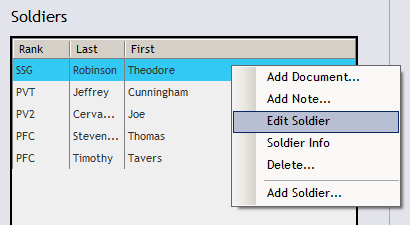

When you need to make changes to a Soldier record, you may edit that Soldier by selecting the Soldiers Tab on the main navigation bar at the top of your screen.
Your current Soldiers populate the list on the left side of the screen. Right-click a Soldier and select the Edit Soldier option.
That will launch the Soldier editing dialog and allow you to save changes.
You may also reach the Soldier editing dialog by viewing the Soldier info detail dialog and chosing the Edit option within.